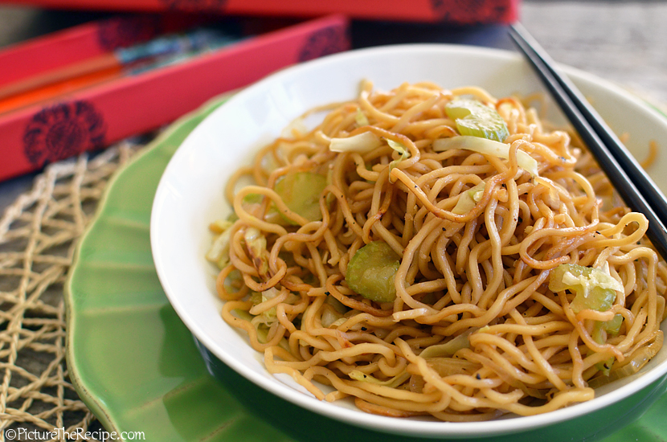

Copycat Panda Express Chow Mein

Chinese Dish
You can make this Panda Express menu favorite at home in less time than it’d take you to load in the car and hit the drive thru.
Even better, you can customize our copycat chow mein easily by adding in any favorite veggies you have on hand. If you want
to bulk this easy noodle dish into an entree, add your protein of choice—leftover chicken, shrimp, or a freshly fried egg would
all make great additions (and they won’t cost extra).
Ingredients
- 3 tablespoons canola oil
- 1 tablespoon sesame oil
- 1/2 white onion, finely chopped
- 2 stalks celery, sliced
- 1 tablespoon chopped fresh ginger
- 5 ounces bean sprouts
- 1 (7.1 ounce) package pre-cooked stir-fry noodles
- 1/4 cup tamari
- 2 tablespoons mirin
Steps:
- Heat canola oil and sesame oil in a wok over high heat. Add onion, celery, and ginger; cook, stirring often, 1 minute. Add
coleslaw mix and sprouts; cook, stirring constantly, 2 minutes. Add noodles, and cook, stirring constantly, 1 minute. Add
tamari and mirin; cook, stirring occasionally, 2 minutes.
That's all about this delicious recipes
return to the main page